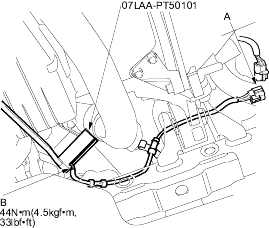
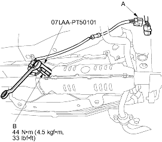

O2 sensor wrench 07LAA-PT50101
- Disconnect the primary HO2S 4P connector (A), then remove the primary HO2S (B).

- Install the primary HO2S in the reverse order of removal.
O2 sensor wrench 07LAA-PT50101
- Disconnect the secondary HO2S 4P connector (A), then remove the secondary HO2S (B).

- Install the secondary HO2S in the reverse order of removal.